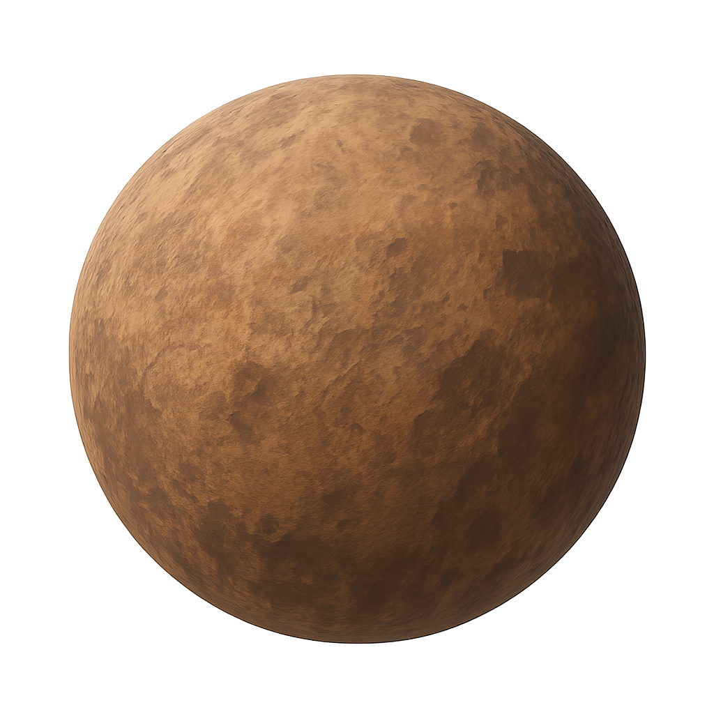
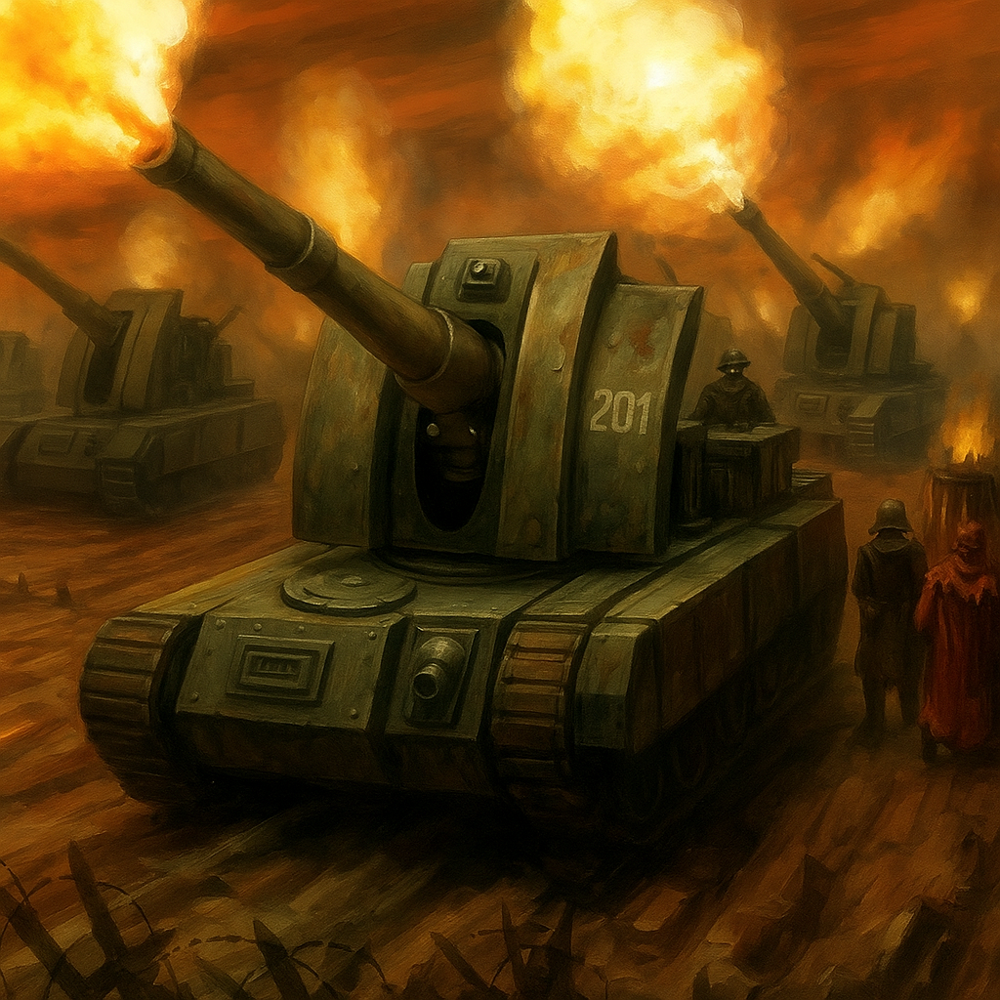
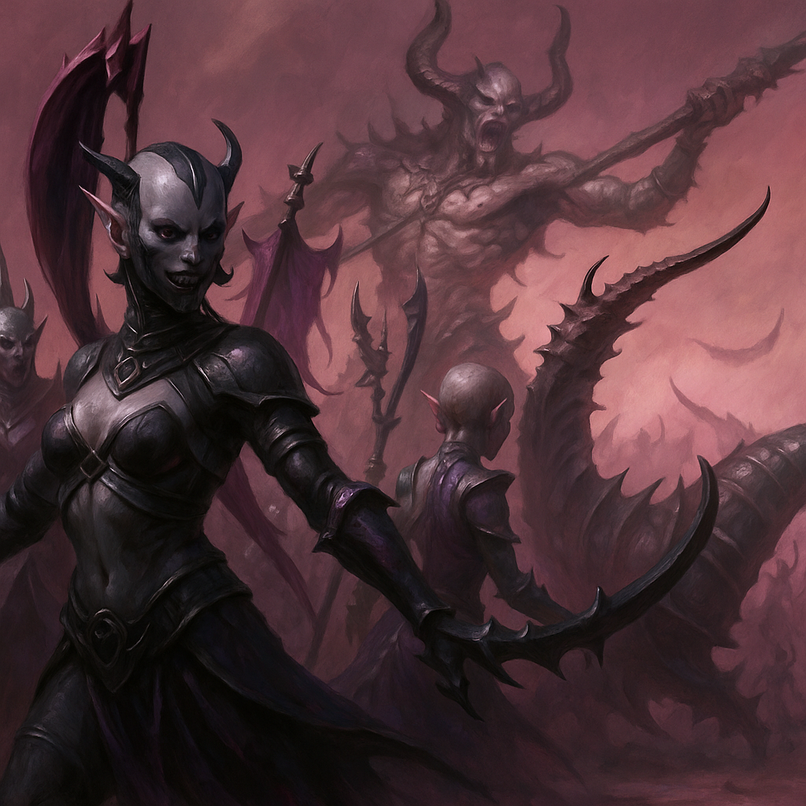

Battle Overview
Date: Late 012.M42
Location: Kelthorn IV, Corroded Noosphere Archive
Mission: Vault Extraction & Purification
Points: ~2000


vs

Battle Summary
- Fungal Warning & Breach: Servo-skulls detected techno-fungal drift. Valera Synapse’s warning triggered the strike, but the vault’s wards failed under Nurgle’s miasma.
- Kastellan Triumph over Putresceon: Three Kastellan Robots destroyed the Great Unclean One at the hatch, buying precious seconds but not ending the rot.
- Arminger Knight’s Desperate Counter: Swarmed by nurglings, the Arminger broke free, holding the loyalist line on a single point of integrity.
- Left Flank’s Encirclement & Synodian Relief: Plague Drones and Plaguebearers nearly wiped out the Kataphron Breachers, but Synodian Dragoons broke through, allowing the Data-Smith to exfiltrate corrupted cores.
- Fall of the Magi: Magos Cerax-9 and Dominus Ferron fell to daemon-fire, silencing purification rites and collapsing the vault’s wards.
- Tide of the Nurglings: With the wards down, nurglings overran the Kataphrons as Mordus’ dirge echoed across the battlefield.
Fate of the Vault
- Partial Extraction: Synodian Dragoons enabled the Data-Smith to escape with a partially intact STC data-core.
- Vault Overrun: With the Magi slain, the vault was overwhelmed and fell to Nurgle’s rot.
Casualties & Cohort Status
Adeptus Mechanicus:
- Kastellan Robots: All three operational, daemon-corrupted
- Ironstrider Ballistarii: Functional but shaken
- Arminger Knight: Severely crippled (1 HP)
- Kataphron Breachers: Nearly annihilated
- Synodian Dragoons: Heavy losses, fulfilled extraction
- Magos Cerax-9 & Dominus Ferron: KIA
- Enginseer Valera Synapse: Last Magi, now in command
Forces of Nurgle:
- Putresceon the Chalice-Bearer: Slain
- Plaguecaster Mordus: Alive, ritual unbroken
- Plaguebearers & Plague Drones: High attrition, still pressuring vault
- Nurglings: Many destroyed, tide inexhaustible
Wider Conflict Implications
- Mechanicum’s Setback: Loss of two Magi and the vault is a grievous blow. The partial data-core gives hope, but the main STC is now tainted.
- Nurgle’s Momentum: Death Guard and daemons now occupy a strongpoint. Mordus will use the vault’s taint to seed new plague-engines.
- Sub-Sector Ramifications: Kelthorn IV’s fall delays Imperial reinforcements elsewhere, tipping the balance toward Chaos.
- Moral & Mythic Echoes: Tales of sacrifice and steel will echo, but the fear of Nurgle’s shadow lingers in the Mechanicum.